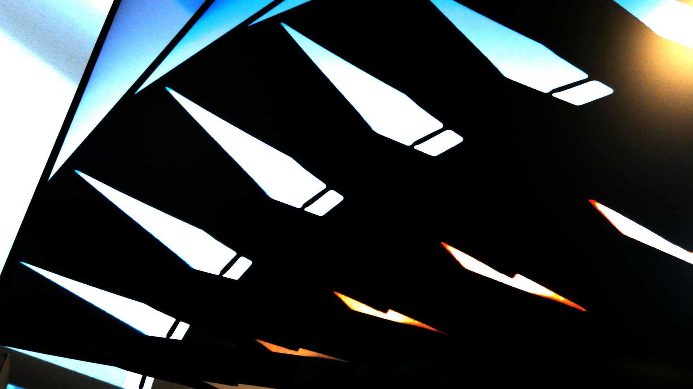
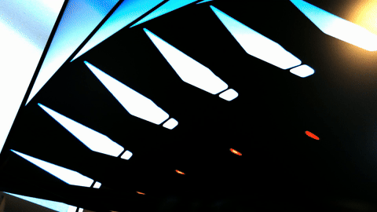
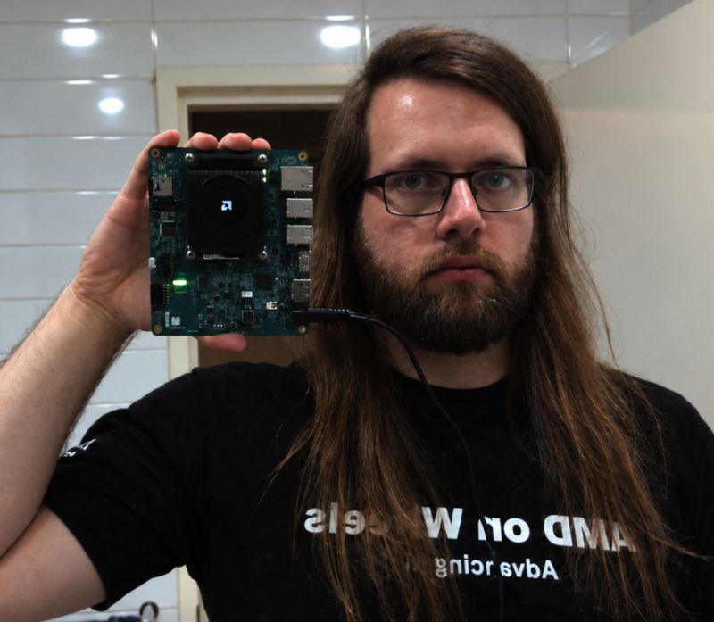

Making the photons loop.
Optical feedback at sunset, followed by a bathroom mirror selfie taken with an FPGA development board.
Agent-assisted implementation, investigation and drafting; questions, decisions and hands-on experiments by me.
I thought it'd be a laugh to - with the design being now just a hop, skip and jump away from this stage - complete the AR1335-to-HDMI-out pathway of my ongoing kv260 multicam build by means of 1) leaving for work with the hardware decidedly in the loop and positioned such that the AR1335 was pointed directly at its own output displayed on a monitor. That way the success criteria could only be personally validated by me dragging a "hall-of-monitors" infinite recursion image over SCP from an FPGA far far away. And 2) leveraging Agentic Engineering to effect this design by SSH'ing back home from the office and instructing my long-suffering gpt to
“Make the photons loop.”
Just pipe it to HDMI
The agent more or less went okay and got on with it. We already had frames coming from the AR1335 through the AP1302, MIPI receiver, colour conversion and framebuffer writer into DDR, and had fixed their damaged right edge. It needed to get those frames onto the display and send me a picture.
That involved some work I could leave it to do over SSH. The display driver expected an audio register resource missing from the older boot device tree, so the agent inspected the installed kernel source and live tree, added the resource to an offline copy and rebooted. A live overlay and rebind hadn’t been enough. After some further work with pixel formats, display planes and page flips, it had the camera view on HDMI and a PNG for me to collect.
The picture was not very good. With the camera so close to the monitor, the full-screen view expanded into bands and colour rather than recognisable screens; a smaller image inside a black border gave us the nested monitors I’d asked for. It also meant the agent was scaling the video in software, which prompted a back-and-forth about why we were scaling a 1920 × 1080 camera image to put it on a 1920 × 1080 monitor.
Still, I had retrieved a picture of the monitor displaying its own camera feed, from the office, so the arrangement worked. I left it there until I got home and could see it in person.
Are You Getting This?
Back home, I started playing with the unscaled view, now that I could move the board back further away from tha monitor. With the evening light coming into the room, most of the screen was black, but a epeating series of brilliantly coloured triangles curled in and around the upper left of the screen. Therre was a combination of bright blue and deep red - blue from the exposed window, and from from god knows wherre - but caught seemingly forever in the photon loop. In addition to the amazing colours, the blue and red shapes were breathing, twitching and flickering in an almost animal fashion as their movement fed back through the camera, and I couldn’t stop watching it. I was expecting a series of boring nested rectangles, but the specifics of the scenario had created an impromptu rather gorgeous piece of motion art.

Between the low light, evening colours coming through the window, poor framing and delay from camera to display, we’d stumbled into something much more interesting than the picture I’d asked for. The camera appeared to keep hunting for focus, feeding another change back into the image it was trying to focus on.
On the other hand, I couldn't help but notice catastrophic frame tearing in the HDMI stream. I started to enquire with gpt what it had done with my carefully constructed quintuple-buffered design (there was a good reason for quintuple buffering in the original design - and it earned me a highkey unheard of mid-job-interview high-five) to end up with frame tearing - but I was so mesmerised by the visuals on screen that I simply had to capture a recording of the effect while it was still fuelled by the brilliantly tinted dusk light from the nearby window. Under normal circumstances, buffer management would be the rabbit hole I would be gravitating towards rather than being distracted from, but I couldn’t waste time while the sun was setting and the colours were still so stunning. And, after all, I didn't expect this to take long. Simply capture some framebuffers live over the high-speed Ethernet cable. What could go wrong?
So I had my gpt set up some live capture.
While it was running, I was so enthused by the spectacle, I wanted to be sure - I asked the agent, “You're getting this, right?” It assured me that it was. After nearly five minutes, it presented me with 338 frames and about fourteen seconds of video. A grand total of about one whole entire frame from each second.
The LLM, famed as they are for their sense of time and motion, had categorically missed the point, and, additionally, inserted a completely unnecessary and wholly unasked-for processing step into the data path - in particular, transcoding the raw framebuffer bytes to JPEG (of ALL things) before transmission - occupying a CPU core and choking the recording branch, though leaving the HDMI output largely unscathed. This decidedly LLM-flavoured missing-of-the-point had wasted a somewhat brief but certainly non-trivial 15–20 minutes of my evening. I am still sure this won't take much longer. Foreshadowing is a literary device in which—
I said - surely just transfer raw pixel data into DDR, capture to SSD, and transcode in post? To which gpt said - yes, good idea, except the Ethernet is not fast enough. What??? Both ends support gigabit. Turns out the agent hadn’t checked the negotiated speed before building the recording pipeline around it, and we were running at 100 Mb/s. It took a human-in-the-loop Kria powercycle plus configuring the Kria to advertise gigabit-only before a high-speed link could be established, wherein a test measured 928 Mb/s.
There was some actual bandwidth arithmetic to do here: full-colour RGB24 at 1080p and 30 FPS would exceed even that connection. Eight-bit YUV420 would fit, but the first software conversion was too slow. The unnecessary scaling from earlier wasn’t helping either; keeping the camera image at its native 1080p had brought display performance from roughly seven frames per second to nearer 26.
Somewhere in the ensuing optimisation, the agent tried RGB332, keeping the resolution but throwing away most of the colour precision. It said, oh I found a way to transfer the frames quick enough, look at this recording. So I looked and saw the worst colour-banding I'd seen since my ex-flatmate tried to show me his very expensive home theatre setup. A second missing-of-the-point, two-for-two: first motion, now colour. I said no, we are not settling for colour banding.
Eventually it built a NEON-vectorised sender that could convert to eight-bit YUV420 and send frames while the next ones were being prepared. No JPEG encoder on the board; the workstation saved the uncompressed frames and timestamps and made the video afterwards. The final four-minute take kept 5,564 frames at 1920 × 1080, averaging about 23 FPS rather than the 30 I’d asked for, but with the motion and smooth colour gradients intact. Here's what I'd been seeing - converted to gif for convenient upload, so, in the end, I did have to settle for a little colour banding.

Worth it. Then I had another unignorable idea for a silly fun 10-minute frame-capture experiment. Surely this one would actually only take 10 minutes. Forebuffering is a framecapture device which—

A KriaSelfie
Take the board into the bathroom, plug it into power and point its camera at the mirror, have the PS capture some buffers to the SD card, and save the resulting KriaSelfies for distribution on the World Wide Web.
For that, it would need to boot without a workstation, wait for the real camera graph and usable frames, allow exposure and white balance to settle, then save pictures for me to retrieve afterward. As this was not terribly complicated, I asked gpt - relieve the PS of its Ethernet transfer duties; have it periodically save images to the SD card instead. Took about 5 minutes to get the new build booted. As expected. Went to the bathroom, powered the board, pointed it and posed. Came back, looked for the images. None. Apparently the agent had taken a valid media graph and a pipeline in PLAYING as evidence that frames would arrive, while the initial service handled a missing graph but not a present one whose first stream stalled.
A direct retry produced frames without reloading the hardware, so the agent added bounded capture retries and persistent attempt logs, then tested two software reboots. Both saved images automatically, with the first needing a second capture attempt. We inspected a photograph of the ceiling to check the result, then still needed to try the board after disconnecting its power.
Finding somewhere to put the pictures involved another small detour. The root filesystem was nearly full, so the agent had made the arguably conceivable choice of moving them to the boot partition. I *cough* gently redirected the agent to instead expand the root partition and filesystem into the unallocated space on the SD card, leaving roughly 13 GiB free.
On the next trip to the bathroom ("sentences to write on your public website"), I spent a considerable time making sure that there would be sufficiently many photos to choose from that hopefully one of them would be good. The AR1335 was kind of jiggling around on its ribbon cable, so I expected most would be blurry. I came back and re-connected the litany of cables I had going on, waited for the board to boot, and on inspection found a grand sum total of three images, all of which were unusable. What happened? The capture service was to save one frame every second! Yes well apparently the LaLaMo had figured that it would be sufficient to retain the last three such.
Keep everything - and take five frames per second, was the instructed amendment. That was my mistake - I hadn't noticed we were back to encoding PNGs on the board, and at much too high a rate. The board became unresponsive, and it took 15 minutes to get it back. My commitment to the KriaSelfie did not waver.
I settled on two raw frames per second, retaining the most recent hundred. That version measured two frames per second, and the agent copied a complete raw frame to the host, decoded its RGB layout and inspected another clean picture of the ceiling. So I unplugged everything, returned to the mirror-room, powered, booted, posed, gave it a good while to capture some candidates, powered down - wait two images per second, keeping the last 100, that's 50 seconds - under a minute. The moment that service restarts, I have less than a minute before every single image I just took is overwritten.
Okay, that's my bad. This time I missed the point.
So, I informed the agent of my moment of misjudgement and asked it to watch carefully over the board's boot so as to kill the service as soon as it starts. It was able to rescue the hundred-frame ring and decoded it on the workstation. During decoding, I increased retention to 1,500 frames, or about twelve and a half minutes, and verified that setting in the installed boot service; the larger ring still needs its power-cycle behaviour qualified.
Well, the 100 images came through and they were also garbage. With the bright overhead lighting, the exposure was making late-October of my face. I brightened the saved images, which brought out more detail along with noise in the darker parts. Oh well. I didn't want to do the whole routine again. I would simply choose the most promising candidate and give it a light post-processing brush-up (including a nice crop) prior to distribution.
Here is the result.

Notice that I had given up on smiling by this point in the evening. It did numbers on LinkedIn tho. I'll come back for the HDMI frametearing another day.
□